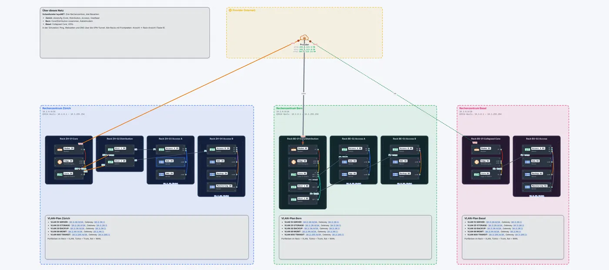

What leyoNET is
leyoNET is a network simulator for teaching. Learners build networks from devices they drag from a shop onto the canvas, configure them like real devices and then switch to the simulation. Real protocols run there: every frame is encoded according to the standards and can be examined layer by layer, down to the individual bytes.
There are no accounts and no tracking. leyoNET runs in three ways, the same everywhere:
| Variant | For | Saving |
|---|---|---|
| In the browser: app.leyonet.ch | start right away, classes, exams, watching | session code on the server (network configuration only) |
One file: leyonet.html | offline, USB stick, exam computers without internet | in the browser of the device, exportable as a file |
| Installed (Windows, macOS, Linux) | own program window | like the file |


The plan for the first 30 minutes
- 5 minutes – watch: open the showcase. Three data centres run live; clicking a device shows its settings on the right, the packet list at the bottom (arrow at the lower edge) shows the packets.
- 10 minutes – build yourself: The first network in 10 minutes: two PCs, a switch, a ping.
- 5 minutes – understand packets: Understanding the simulation and the packet list: packet list, OSI view, single step.
- 5 minutes – choose a profile: Choosing feature profiles: what should your learners see?
- 5 minutes – first exercise: Tools → Exercise catalog, start a one-star exercise and press “Check” (Exercises and worksheets in class).
What comes next
- Create tasks yourself or adapt existing ones: Creating your own tasks.
- Exams: practical exams with points and grades: Running exams.
- Web version with classes: watch the class’s work live: Web version: sessions, classes and watching.
- Class network: every group builds a site, the projector shows who is online: Class network in the classroom.
- Series for the Swiss ICT modules 117, 129 and 145: Module 117: IT and network infrastructure, Module 129: Putting LAN components into operation, Module 145: Operating and extending a network.
- All demo networks are listed at the bottom of this page, each with a link to watch it.
- Theory for learners: every device and every protocol has a page in this wiki with an example to watch and the standard.
Frequent questions are answered in Frequently asked questions.
All demo networks
How to do it in leyoNET
The same text as in the app’s help (F1 key).
Demo networks
File → Demo networks … (or ▶ in the toolbar) offers a ready-made network for every protocol, from an ARP ping to the data centre network with racks, modems and IPsec.
- Present starts the simulation and triggers the matching action (e.g. a ping) with the desktop open
- Step by step (for many demos): an avatar teacher explains the test case in small steps, highlights devices, opens the matching settings and pauses the simulation so you can follow along in single step. Everyone can customise the avatar (click the avatar or Help → Customise avatar …); only the appearance is saved, only in your own browser. — (or Esc) hides the speech bubble; the avatar stays small in the corner and brings it back with one click. A finished tour can also be shown again via Help → Show the teacher or in the demo networks.
- Open loads the network into design mode to explore and change
Undo brings back the previous project. Every demo is checked automatically with each release.
Showcase: with ?schaufenster in the address (e.g. app.leyonet.ch/?schaufenster) the data centre network runs view-only in a loop, ideal for a projector, open day or booth; ?schaufenster=vpn shows another demo. Nothing is saved; «Build your own network» returns to your own work.
See an example
- Data centre network
Three data centres, three designs: Zurich three-tier (core, distribution, access), Bern with combined core and distribution, Basel as collapsed core. Everything is cabled redundantly: double links in a port channel (LACP) and every access switch connected to two switches, with spanning tree blocking the backup. All devices are mounted in racks, the ports carry the colour of their VLAN. The sites connect via fibre, cable modem and VDSL, linked with IPsec tunnels.
A server in Zurich pings the NAS in Bern through the VPN tunnel, monitoring fetches the Basel web page by its DNS name, Bern queries the DNS server in Zurich, and Basel pings the Zurich monitoring.
“Watch live” opens the network in leyoNET, the simulation runs in a loop. In the app you find it under File → Demo networks, with a step-by-step tour.